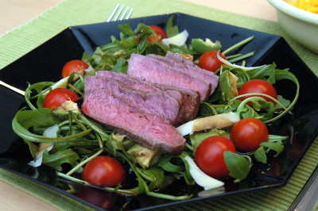

| Zutaten für 4 Personen: | |
| 800 g | Rindshuft |
| 1 EL | schwarzer Pfeffer, gemahlen |
| 1 | Rosmarinzweig (gehackt) |
| Meersalz | |
| 1 | Olivenöl |
| 1 | handvoll Rucola |
| 16 | Cherry-Tomaten |
| 50 g | fein gehobelter Parmesan |
| Balsamico-Sauce | |
| 24 EL | Balsamico Essig |
| 150 g | eiskalte Butter |
| Pfeffer und Salz | |
Rindshuft am Vortag mit Pfeffer, Rosmarin und Olivenöl marinieren.
Vor dem Anbraten salzen und auf beiden Seiten kräftig anbraten.
In einem Bräter oder einer Gratinform im auf 90°C vorgeheizten Ofen niedergaren, bis eine Kerntemperatur von 55°C erreicht ist.
Balsamico aufkochen, eiskalte Butter langsam einrühren und nochmals aufkochen.
Mit Salz & Pfeffer würzen.
Rucola, Cherry-Tomaten und Parmesan auf die Teller verteilen, mit Salz und Pfeffer würzen.
Fleisch auf dem Beet anrichten und mit der Balsamico-Sauce beträufeln.
Rezept von Marielle aus der Sendung Swiss Dinner vom 20.10.2012 auf Tele Züri
Hat im Oktober 2012 wunderbar geschmeckt! Bin nicht ganz verstanden was es mit der eiskalten Butter auf sich hat. Wenn ich den Balsamico warm mache dann schmilzt ja die Butter. Soll ich das kochen bis es etwas eindickt? So wurde es eine sehr wässrige Sauce die im Teller herum schwamm.
@LINKBACK_TAG@ @WAKELOCK@